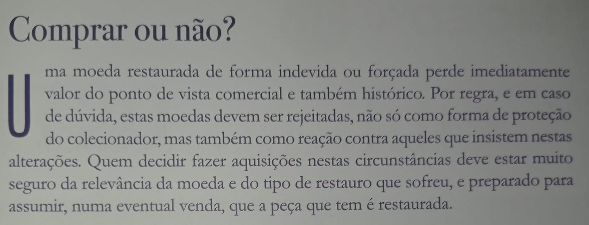

24 de setembro de 2022  Da lavra de Javier Salgado e João Pedro Vieira. ← Artigo anterior 23 de setembro de 2022 Artigo seguinte → 26 de setembro de 2022 ← Voltar à categoria ← Voltar à página inicial